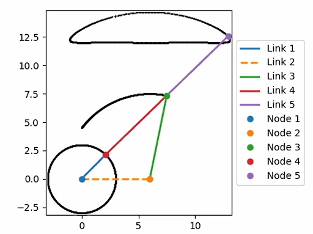
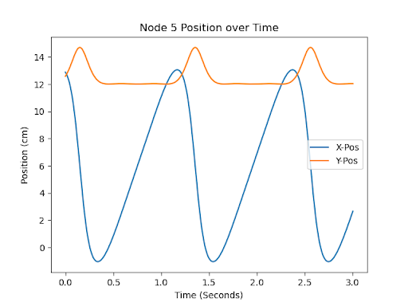

This project focused on the design and development of an small robot engineered to traverse a suspended rope using a synthesized pair of 4-bar linkages. By implementing a custom 3:2 gear ratio powertrain, the inverted walker achieved a stable traversing speed of 20m/s (surpassing the minimum course requirement by a factor of ten) while maintaining power and stability.

Linkage Path Synthesis: Developed a dual 4-bar linkage system using path synthesis and PVA analysis to coordinate a symmetrical gait pattern for rope traversal.
Speed: Engineered a motor-gear assembly with a custom 3:2 gear ratio, achieving a stable speed of 20m/s, which surpassed the minimum course requirement of 2m/s.
Stability: Designed a two-tail stabilization system to eliminate the weight-bearing issues found in earlier iterations.

Linkage and Trajectory Visualization

Position of the Leg-Rope Contact Point Over Time